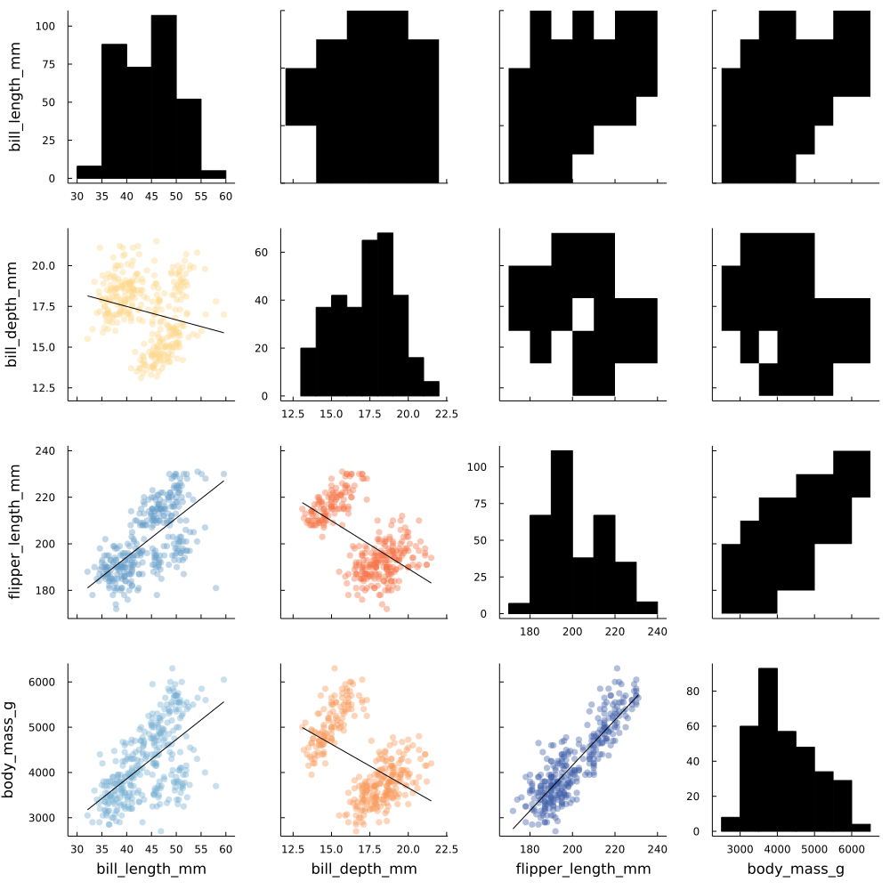
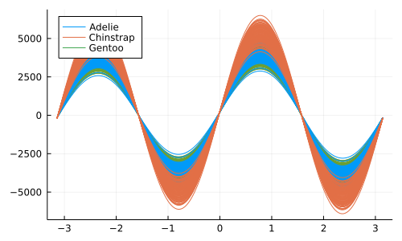
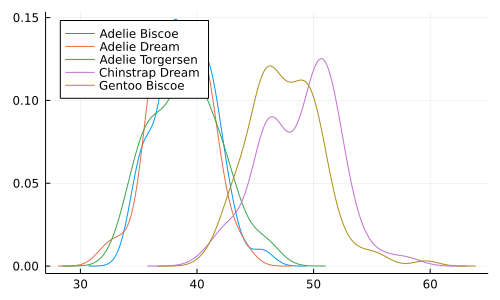

Simple data reading, manipulation and plotting of the penguins dataset¶
Activates the environment specified in Project.toml in the directory root¶
[1]:
using Pkg
Pkg.activate("../")
Activating project at `~/Coding/machine-learning-julia`
[25]:
using CSV
using DataFrames
using HTTP
using StatsPlots
using MLJ
Pkg.status()
Status `~/Coding/machine-learning-julia/Project.toml`
[336ed68f] CSV v0.10.4
[a93c6f00] DataFrames v1.3.5
[cd3eb016] HTTP v1.3.3
[7073ff75] IJulia v1.23.3
[91a5bcdd] Plots v1.33.0
[f3b207a7] StatsPlots v0.15.3
[20]:
ENV["COLUMNS"]=120
[20]:
120
[11]:
url = "https://raw.githubusercontent.com/mwaskom/seaborn-data/master/penguins.csv"
df = DataFrame(CSV.File(HTTP.get(url).body));
[22]:
first(df, 3)
[22]:
3 rows × 7 columns
| species | island | bill_length_mm | bill_depth_mm | flipper_length_mm | body_mass_g | sex | |
|---|---|---|---|---|---|---|---|
| String15 | String15 | Float64? | Float64? | Int64? | Int64? | String7? | |
| 1 | Adelie | Torgersen | 39.1 | 18.7 | 181 | 3750 | MALE |
| 2 | Adelie | Torgersen | 39.5 | 17.4 | 186 | 3800 | FEMALE |
| 3 | Adelie | Torgersen | 40.3 | 18.0 | 195 | 3250 | FEMALE |
[21]:
describe(df, :all)
[21]:
7 rows × 13 columns
| variable | mean | std | min | q25 | median | q75 | max | nunique | nmissing | first | last | eltype | |
|---|---|---|---|---|---|---|---|---|---|---|---|---|---|
| Symbol | Union… | Union… | Any | Union… | Union… | Union… | Any | Union… | Int64 | Any | Any | Type | |
| 1 | species | Adelie | Gentoo | 3 | 0 | Adelie | Gentoo | String15 | |||||
| 2 | island | Biscoe | Torgersen | 3 | 0 | Torgersen | Biscoe | String15 | |||||
| 3 | bill_length_mm | 43.9219 | 5.45958 | 32.1 | 39.225 | 44.45 | 48.5 | 59.6 | 2 | 39.1 | 49.9 | Union{Missing, Float64} | |
| 4 | bill_depth_mm | 17.1512 | 1.97479 | 13.1 | 15.6 | 17.3 | 18.7 | 21.5 | 2 | 18.7 | 16.1 | Union{Missing, Float64} | |
| 5 | flipper_length_mm | 200.915 | 14.0617 | 172 | 190.0 | 197.0 | 213.0 | 231 | 2 | 181 | 213 | Union{Missing, Int64} | |
| 6 | body_mass_g | 4201.75 | 801.955 | 2700 | 3550.0 | 4050.0 | 4750.0 | 6300 | 2 | 3750 | 5400 | Union{Missing, Int64} | |
| 7 | sex | FEMALE | MALE | 2 | 11 | MALE | MALE | Union{Missing, String7} |
[30]:
gr(size = (1000, 1000))
@df dropmissing(df) corrplot(cols(3:6), grid = false)
[30]:

[33]:
gr(size = (500, 300))
@df dropmissing(df) andrewsplot(:species, cols(3:6), legend = :topleft)
[33]:

[35]:
gr(size = (500, 300))
@df dropmissing(df) density(:bill_length_mm, group = (:species, :island), legend = :topleft)
[35]:
